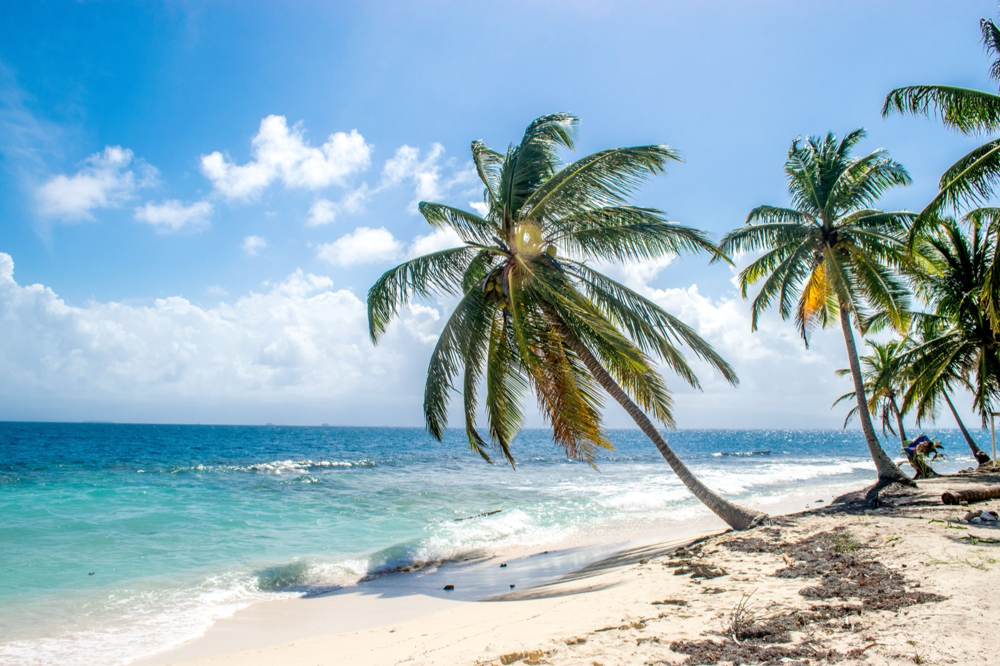
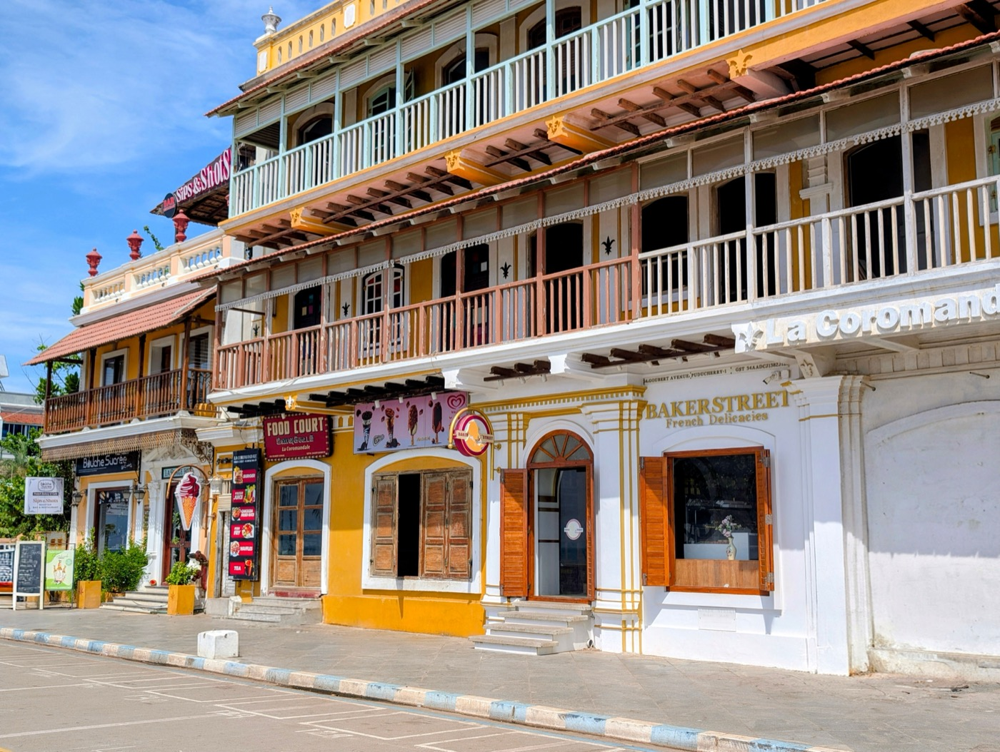

Moving to Barbados in 2026
Home of the original 12-month remote-work visa, the Caribbean's strongest healthcare, one of the region's safest ratings, and English everywhere. Here's the Welcome Stamp, the real cost, and where expats land.

Barbados made history in 2020 as one of the first countries anywhere to launch a dedicated remote-work visa, the Welcome Stamp, and it's still one of the smoothest landings for an English-speaking remote worker. Add the Caribbean's strongest healthcare system, a Level-1 safety rating, good roads, reliable utilities, and safe-to-drink tap water, and you get one of the easiest transitions in the region. The one thing it isn't is cheap.
The short version
- The visaWelcome Stamp, 12 months, renewable as many times as you like
- What it costs$2,000 for one person, $3,000 for a family. Renewals are 25% off.
- What you must earn$50,000 a year from outside Barbados. Often misreported lower.
- The tax dealYou are deemed NOT tax resident, so Barbados takes nothing on foreign income and no social security either
- Watch the dateCabinet has only authorised the programme through 31 December 2026
- How long it takesRoughly one to four weeks online
The Welcome Stamp: the 12-month remote-work visa
The Welcome Stamp lets you live in Barbados for 12 months while working remotely for an employer, clients, or business outside Barbados:
- Income: show at least US$50,000/year, plus valid health insurance.
- Fee: US$2,000 individual / US$3,000 family bundle (paid only after approval; renewals get a 25% discount).
- Speed: processing usually confirmed within about five working days.
- Renewable as many times as you like; the program is committed through at least Dec 31, 2026.
- Catch: you can't take local employment or serve Barbadian clients, and you must enter within 12 months of approval.
The date nobody mentions: 31 December 2026
Every guide will tell you the Welcome Stamp is renewable indefinitely. That is true of your individual permit. It is not true of the programme.
Cabinet has approved the scheme through 31 December 2026. After that it needs renewing again, as it has been before. Barbados launched this in July 2020, one of the first countries anywhere to do it, and has extended it repeatedly since. The likeliest outcome by far is another extension.
But it is worth knowing that the legal basis for your stay has a sunset date on it, and that date is close. If you are planning a move around this visa, check barbadoswelcomestamp.bb for the current authorisation before you book anything or give notice on a lease.
What the visa is actually worth
The tax treatment is the whole product. Under the Remote Employment Act 2020, a Welcome Stamp holder is deemed not tax resident in Barbados. No Barbados income tax on your foreign earnings, and no social security contributions on them either.
Barbados income tax, by status
The visa is not a discount on the resident rate. It removes you from the system entirely for the twelve months you hold it.
Which is a genuinely different thing from a low-tax jurisdiction. You are not paying a small amount, you are outside the net. There is also no capital gains tax and no inheritance tax in Barbados at all, resident or not.
One thing that catches people: none of this touches what you owe at home. Americans in particular still file and still pay. The Welcome Stamp solves the Barbados side of the equation and nothing else.
Taxes: zero on foreign income (on the visa)
Under the Remote Employment Act, Welcome Stamp holders are treated as non-residents for tax purposes, no Barbados tax on foreign-sourced income during the visa. (Your home-country obligations still apply, for US citizens, the IRS doesn't stop at the water's edge.)
Is Barbados safe?
Among the safest in the region. As of April 2026 the US State Department rates it Level 1, Exercise Normal Precautions, the lowest tier. Serious crime is rare in typical expat areas; the main risk is petty theft (bag/phone), so use the same street sense as any city and avoid isolated spots after dark.
Cost of living
Barbados is a premium destination, comparable to a major international city, housing and imports are the drivers (imported goods often 30–50% above US prices).
| Household (2026) | Typical monthly budget |
|---|---|
| Single, central Bridgetown | ~€1,244 (~$1,350) |
| Family of four | ~€2,300 (~$2,500) |
| Comfortable American couple | from ~$4,700 |
Healthcare: the best in the region, and you still need cover
The strongest system in the Caribbean, anchored by the 1,000-plus-bed Queen Elizabeth Hospital plus private facilities, all in English, with a high doctor-to-patient ratio. It's two-tier: the public system is reserved for Barbadian nationals, so expats rely on private care and international insurance (often required for the Welcome Stamp). For complex cases (certain cancers, transplants), evacuation abroad may be needed, make sure your policy covers it.
Where expats actually live

- West Coast (“Platinum Coast”, Holetown, Speightstown): the prestige address, luxury and international.
- South Coast (St Lawrence Gap, Oistins, Maxwell): livelier, the strongest everyday expat community, better value.
- East Coast (Bathsheba) & central parishes: authentic, nature-focused, and more affordable (mind the strong Atlantic currents, swim on the west/south coasts).
Is Barbados right for you?
- Great fit if: you're a remote worker or retiree who wants an easy English-speaking landing, top healthcare, and strong safety, and your income clears the bar.
- Think twice if: you need low costs, or you want a fast path to permanent status (the Welcome Stamp is temporary; permanent immigrant status generally needs five years or property/heritage ties).
You can rent in Barbados. Owning is a different question.
Plenty of people land in Barbados and spend a decade renting because buying looked complicated. It usually is not. It is just unfamiliar. SORA designs and builds homes across the tropics, with our deepest roots in Panama and Costa Rica, where residency is straightforward and building costs a fraction of the coastal Caribbean. If the move is really about a place of your own in the sun, it is worth seeing what a fixed-price build looks like before you commit to any one island.
Frequently asked questions
What is the Barbados Welcome Stamp?
It's a 12-month remote-work visa (one of the world's first, launched 2020) for people who work remotely for employers or clients outside Barbados. You need at least US$50,000/year in income and valid health insurance; the fee is US$2,000 individual / US$3,000 family, and it's renewable. Holders are treated as non-residents for tax, so foreign income isn't taxed by Barbados during the visa.
Is Barbados safe?
Yes, it's one of the safest Caribbean islands, rated Level 1 (Exercise Normal Precautions) by the US State Department as of April 2026. Serious crime is rare in expat areas; the main risk is petty theft, so use normal city precautions and avoid isolated areas after dark.
How much does it cost to live in Barbados?
It's a premium destination. A single person in central Bridgetown budgets around €1,244 (~$1,350)/month; a comfortable American couple typically starts around US$4,700/month, with housing the largest line item. Imported goods often run 30–50% above US prices.
What is healthcare like in Barbados?
The strongest in the Caribbean, anchored by the 1,000+ bed Queen Elizabeth Hospital, delivered in English. It's two-tier, the public system is for Barbadian nationals, so expats use private care and international insurance (often required for the Welcome Stamp). Complex cases may require medical evacuation abroad, so ensure your policy covers it.
Sources & verification
Figures in this guide were checked against primary and authoritative sources on 27 July 2026. Immigration, tax, and cost figures change, so always confirm the current rules with the official body or a licensed professional before acting.
- Barbados Welcome Stamp (official) · official remote-work visa program
- Barbados Revenue Authority · official tax authority (non-resident treatment)
- US State Department, Barbados · Level 1 travel advisory (April 2026)